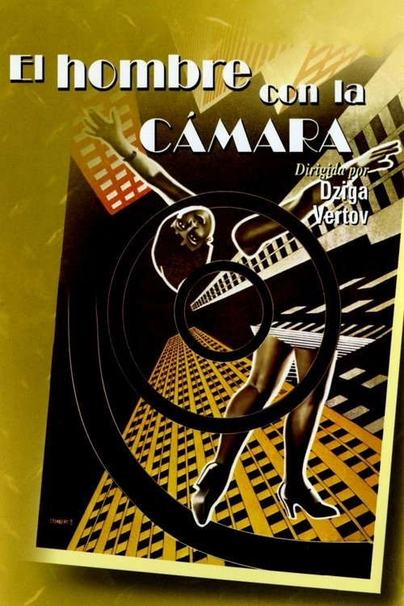

El hombre de la cámara (1929)
Sinopsis Rápida
Un cámara errante captura la vibrante vida urbana de los años 20, ofreciendo un retrato íntimo y sorprendente de una época irrepetible. ¿Qué secretos revelará su lente?
Sinopsis Detallada
Dziga Vertov, un maestro del cine soviético, nos regala en 'El hombre de la cámara' una experiencia cinematográfica revolucionaria. A través de la mirada objetiva de su cámara, que se convierte en el protagonista indiscutible, asistiremos a un caleidoscopio de imágenes que documentan la vida cotidiana de una ciudad. Su estilo innovador, con montaje dinámico y secuencias impactantes, no solo es un documento histórico, sino una obra de arte que redefinió la forma de narrar en el cine. La película se convierte en un testimonio de la vida, la muerte, el trabajo y el ocio de una sociedad en transición, llena de energía y transformaciones.
¿Por qué tenés que verla?
- Descubre un clásico del cine que revolucionó la forma de narrar.
- Experimenta la innovación visual y el montaje dinámico de Vertov.
- Adéntrate en un retrato único de la vida urbana en la era soviética.
- Observa el poder del cine como documento histórico y artístico.
Idea Extra
Análisis comparativo del estilo de Dziga Vertov con cineastas contemporáneos del Cine-Verdad.